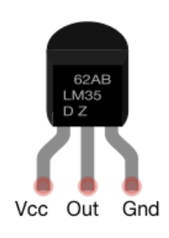
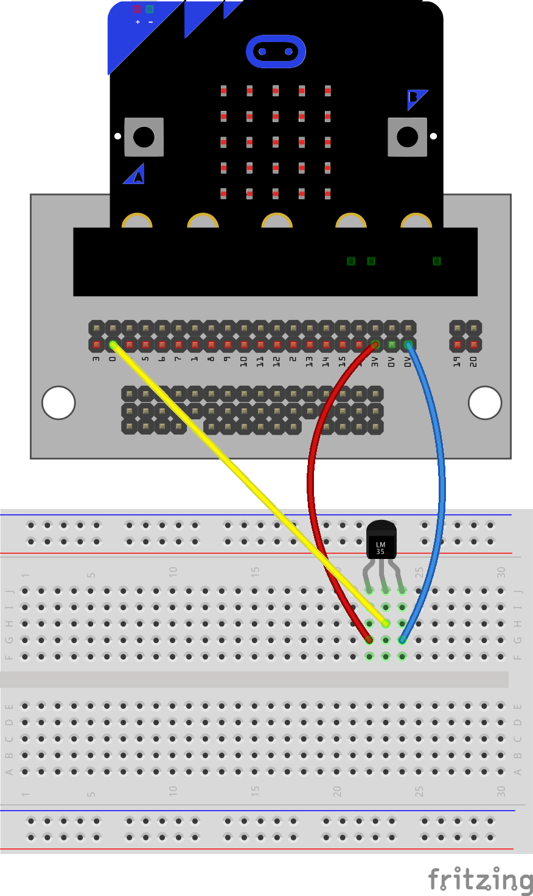
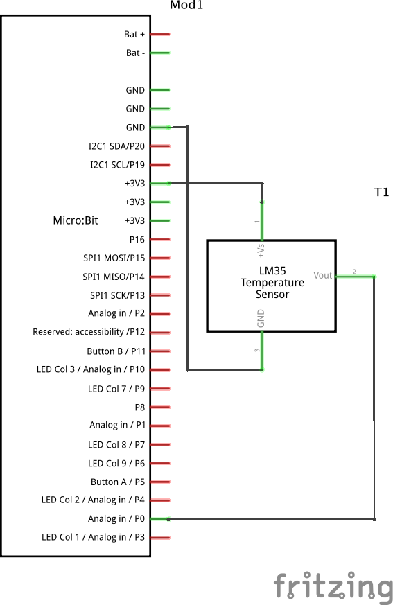

1.2. Microbit les 1b#
Physical computing
Deze pagina toont een voorbeeld van het materiaal voor Physical computing. Je kunt deze pagina afdrukken als leskaart die leerlingen naast hun schakeling kunnen leggen.
Doel
Een microbit die continu de temperatuur meet en weergeeft.
Voorkennis
Basiskennis Python, microbit en microPython
Concepten
microbit; temperatuursensor
Wat heb je nodig?
TBD.
from microbit import *
while True:
temp = temperature()
display.show(" " + str(temp))
from microbit import * - maakt alle microbit-functies beschikbaar in dit programma.
while True: -
herhaal deze acties totdat de microcontroller uitgezet of gereset wordt.
temperature() levert een getal (Number). Voor het display moeten we deze omzetten in een string, via de str-functie.
We gebruiken spaties om de opeenvolgende temperatuurwaarden op het display te onderscheiden.
Test of je sketch goed werkt:
geeft het display de temperatuur weer?
neemt de weergegeven temperatuur toe als je de processor (met je vingers op het bordje, boven knop B) verwarmt?
neemt de temperatuur weer af als je de processor laat afkoelen?
Opmerkingen: (i) de temperatuur die je meet op de processor wordt beïnvloed door de warmte die de processor zelf afgeeft. Als je de temperatuur in een ruimte wilt meten, kun je beter een losse sensor gebruiken.
1.2.1. Temperatuur meten met losse sensor#
Schakeling
sluit microbit-3V aan op Vcc van de sensor
sluit microbit-0V aan op Gnd van de sensor
sluit pin0 van de microbit aan op Out van de sensor
Zie breadboard-schakeling en schema verderop.
LM35DZ pinout
{kind=link}
Analoge input
pin0.read_analog()resultaat: 0..1023
0V=>0, 3.3V=>1023
3.3V == 3300 mV
Karakteristieken LM35DZ
temperatuur bereik 0-100 ‘C
nauwkeurigheid +/- 0.25 ‘C
0 ‘C => 0V
10 mV per 0.1 ‘C
Python programma
from microbit import *
while True:
temp1 = temperature()
temp2 = pin0.read_analog()
print((temp1, temp2))
sleep(100)
Nog aanpassen!
Het programma hiernaast in nog niet juist!
Voor het bepalen van temp2 moet je rekening houden met:
het spanningsbereik van de sensor, afhankelijk van de temperatuur;
het bereik van de A/D-omzetter van de microbit.
breadboard-schakeling |
schema |
|---|---|
|  |  |
{kind=link}
{kind=link}